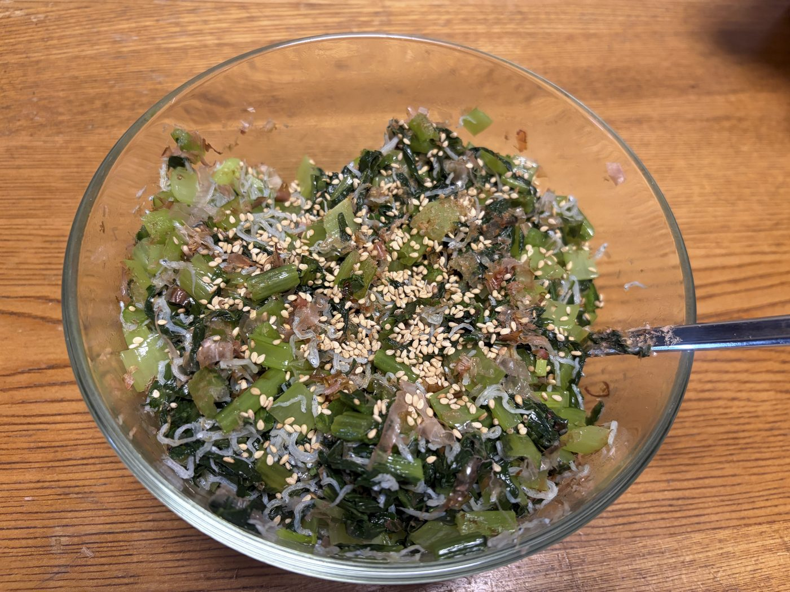

今年の1月に仕事を退職し、2月末にリベシティに体験入会。3月に本入会して家計管理を頑張ってきたぴかりんごですが、食費がなかなか抑えられません。
昔、「ヨネスケの隣の晩ごはん」という番組がありましたけど、巷の主婦の皆さんがどんな晩ごはんを毎日作って、どのように家計管理をされているのか、すごく知りたいです。（特に食費！！）
📋 この記事でわかること
- 料理がとにかく苦手なぴかりんご家の、リアルな食費事情
- 「ある日の晩ごはん」献立の正直な公開（写真つき）
- 5人家族の食事、1食あたりいくらかかっているか
- 鉄分・カルシウムがとれる簡単な作りおき「小松菜とじゃこの生ふりかけ」レシピ
食費が抑えられない…我が家の家計事情
ぴかりんごはものすごく料理が苦手なので、生協（コープデリ）の食材を頼りにしています。それでも、少しでも食費を抑えるために、生協での注文を「生協でしか購入できないもの」だけにして、一部の野菜や肉や魚などは生協より割安のスーパーでの購入に変えました。
頑張ってみているものの、夫が気まぐれにスーパーで買ってきたものや、記念日にとった出前のお寿司、誕生日のケーキなどを合わせると、ものすごい額になってしまいます。お米の価格がだいぶ安く落ち着いてきたように思いますが、それでも食費を抑えるのに苦労しています。
平日は夫や長男は仕事なので昼間は家にいませんが、母と私と次男は毎日昼ご飯を家で食べるので、食費がかさむのも仕方がないのかな…と思いつつ、やっぱり悩ましいです。。
これでも、いつも購入していたお菓子を一切買わなくなった分、節約になっているはずです。以前はいったいいくらのお菓子代が毎月かかっていたのかと思うと、ゾッとします。
料理が苦手な私の「ある日の晩ごはん」献立公開
料理が苦手な主婦が作る晩ごはんのメニューを公開することに意味があるのかはわかりませんが、我が家の「ある日の晩ごはん」を写真つきでご紹介したいと思います。（お恥ずかしいですが、思いきって…！）
その他には、冷やし中華、豚バラ大根の煮物、いんげんのバター炒め、鶏そぼろ・炒り卵の3色丼と大根の味噌汁ときゅうり・人参・ごぼうのサラダ、カレー…などを作っています。似たようなメニューを短期間でくるくる回している感じです。
1食あたりの食費は1,500〜2,000円
ここのところ体温レベルの暑さが続いているので、台所に立つのが本当に辛いです！！ そんな中でもなんとか作っていますが、だいたい計算してみると——
1食 約1,500〜2,000円
主食も合わせて、家族5人分の食事1回あたり。
これが毎日…と思うと、なかなかの金額です。
朝一番で洗濯などの家事を済ませてから、在宅ワーク実現のための情報収集や勉強・案件への申し込みや作業などをしていますが、1日が本当にあっという間なので、いつも慌てて作る感じです。
我が家は朝ごはん・昼ごはんは各自セルフ形式のシステムにしており、私が作るのは1日1食、晩ごはんのみ。それでも毎日作るのはシンドイ！！ 家族の健康を考えると、私のごはんって栄養的に大丈夫なのかな？といつも思っています。
これさえ食べておけば安心？「小松菜とじゃこの生ふりかけ」
そんな私でも、「これを定期的に食べていれば大丈夫な気がする！」といつも作っている常備菜があります。それが、小松菜とじゃこの生ふりかけです。
私のような料理が大の苦手な主婦でも簡単に作れるレシピで、日本人に不足しがちな鉄分とカルシウムを一度に摂取できる優れものです。作ると冷蔵庫で5日ほどもつのですが、我が家はあっという間になくなってしまいます。朝ごはんや休日の昼食も、ご飯を炊いておけばこれだけで済ませられちゃいます。
🥬 小松菜とじゃこの生ふりかけ

※ 我が家は5人家族で人数が多いので、一度にたくさん作ります。
【材料】（我が家の場合）
- 小松菜 3把
- ちりめんじゃこ 40g（お好みで）
- 鰹節 適量
- 白ごま 適量
- ごま油 適量
- 塩 少々
【作り方】
- 小松菜を洗い、よく水を切って、5〜8mmくらいに小さく刻む。
- ごま油で①を3分間くらい炒め、塩を少なめに加える（じゃこにも塩分があるため）。
- 大きめの容器に入れて粗熱を取る。
- ③にちりめんじゃこと鰹節（おかか）を入れて混ぜる。
- 最後に白ごまをふって、できあがり！
本当に簡単で美味しいので、作ったことがない方はぜひ作ってみてください。ものすごく、ごはんが進みます。
まとめ
お料理が好きで上手な人が、本当にうらやましいです。毎日のごはん作りが楽しく・楽になる方法や、良いレシピを知っている方がいらっしゃったら、ぜひ教えてほしいです。
料理が苦手でも、なんとか毎日晩ごはんを作って生きています。同じように「料理が苦手だけど頑張っている」という方に、「ここにも仲間がいるよ」と思ってもらえたら嬉しいです。
I left my job this past January, did a trial membership at an online money community at the end of February, and joined properly in March. I've been trying hard to manage our household budget ever since — but our food costs are stubbornly hard to keep down.
Japan used to have a TV show where the host would drop in on ordinary families at dinnertime. Honestly, I'd love that — I really want to know what other homemakers cook every day, and how they keep their grocery budgets under control. (Especially the food budget!!)
📋 What you'll find in this article
- The real food-budget situation of a family whose cook (me) is genuinely bad at cooking
- An honest look at our everyday dinner menus (with photos!)
- How much a single meal for our family of five actually costs
- An easy make-ahead recipe rich in iron and calcium: "komatsuna & baby sardine rice topping"
Why our food budget won't behave
Because I'm so bad at cooking, I lean heavily on ingredients from our co-op grocery delivery. Even so, to shave costs a little, I now order from the co-op only the things I can't get elsewhere, and buy some of the vegetables, meat and fish at a supermarket that's cheaper than the co-op.
I try my best, but once you add in the things my husband buys on a whim at the store, the sushi delivery on anniversaries, and birthday cakes, it all adds up to a scary total. Rice prices seem to have settled down a fair bit, but keeping food costs low is still a struggle.
On weekdays my husband and eldest son are at work and out of the house during the day, but my mother, my second son and I eat lunch at home every day — so I tell myself the higher grocery bill is just unavoidable… and yet it still weighs on me.
On the plus side, I've completely stopped buying the snacks I used to keep in the house, so that should be saving us money. When I think about how much I must have been spending on snacks every month before, it gives me chills.
An honest look at our everyday dinners
I'm not sure there's any value in a not-so-great cook publishing her dinner menus, but here are some of our everyday dinners — with photos this time. (A little embarrassing, but here goes!)
Other regulars include cold ramen, simmered pork belly & daikon, buttered green beans, a three-color rice bowl with chicken soboro and scrambled egg (with daikon miso soup and a cucumber-carrot-burdock salad), and curry. I basically rotate through a small set of similar meals.
One meal costs about ¥1,500–2,000
Lately the heat has been at body-temperature levels, so standing in the kitchen is genuinely rough!! But I manage to cook anyway, and when I do the math—
≈ ¥1,500–2,000 / meal
Including the staple rice, for one meal for our family of five.
Every single day… that really adds up.
First thing in the morning I get chores like laundry done, then spend time researching, studying and applying for remote-work gigs. The day flies by, so I always end up cooking in a rush.
In our house, breakfast and lunch are self-serve; the only meal I cook is dinner, once a day. And even that is exhausting to make every single day! When I think about my family's health, I always wonder whether my cooking is really nutritious enough.
My safety net: "komatsuna & baby sardine rice topping"
Even so, there's one make-ahead dish I keep coming back to, thinking "as long as we eat this regularly, we'll probably be okay!" — komatsuna (Japanese mustard spinach) & baby sardine rice topping.
Even a cook as hopeless as me can make it easily, and it delivers iron and calcium — two nutrients Japanese people tend to lack — in one go. It keeps about five days in the fridge, though in our house it vanishes almost instantly. For breakfast or a weekend lunch, just cook some rice and this alone makes a meal.
🥬 Komatsuna & baby sardine rice topping
※ We're a family of five, so I make a big batch at once.
Ingredients (our portions)
- Komatsuna — 3 bunches
- Chirimen-jako (dried baby sardines) — 40g (to taste)
- Katsuobushi (bonito flakes) — as needed
- White sesame seeds — as needed
- Sesame oil — as needed
- Salt — a pinch
How to make it
- Wash the komatsuna, drain well, and chop into small 5–8mm pieces.
- Stir-fry in sesame oil for about 3 minutes and add a little salt (go light — the jako is already salty).
- Transfer to a large container and let it cool.
- Mix in the baby sardines and bonito flakes.
- Finish with a sprinkle of white sesame — done!
It's genuinely easy and delicious, so if you've never made it, do give it a try. It makes the rice disappear.
In closing
I truly envy people who love cooking and are good at it. If you know a way to make daily cooking more fun and less of a chore, or have a great recipe to share, I'd love to hear it.
Even though I'm bad at cooking, I somehow make dinner every day and keep going. If you're someone who also finds cooking hard but keeps at it anyway, I hope you'll feel: "There's a friend over here, too."